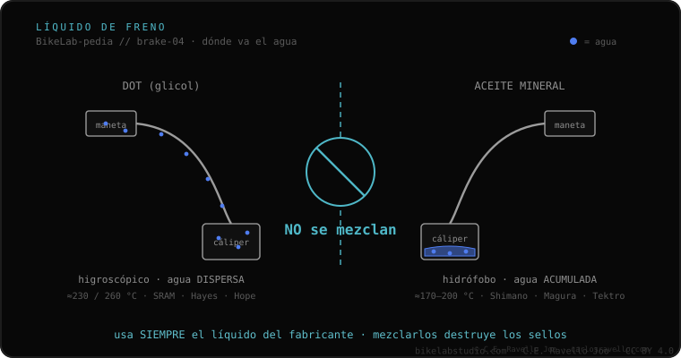

O fluido DOT é um fluido de freio à base de glicol, usado por SRAM, Hayes e Hope. É higroscópico: absorve umidade do ambiente com o tempo, por isso se troca periodicamente. Seus pontos de ebulição secos são ≈230 °C (DOT 4) e ≈260 °C (DOT 5.1); o 4 e o 5.1 são misturáveis entre si. O crítico: o DOT nunca se mistura com óleo mineral —destrói os retentores—. E atenção: o DOT 5 (silicone) é outra coisa, incompatível, e não se usa em bikes.
Se o seu freio é SRAM, quase com certeza leva DOT. É potente e resiste muito calor, mas exige respeito: absorve água e é corrosivo.
O DOT absorve ativamente a umidade que entra pelos retentores, dispersando-a no fluido para que não se formem bolsas de água pura que fervem a 100 °C. Isso mantém o manete firme em descidas longas. A contrapartida: como acumula água, baixa seu ponto de ebulição com o tempo e é preciso fazer a sangria periodicamente. Além disso é corrosivo: danifica a pintura e a pele.

Vai só em freios projetados para DOT (diz na tampa do reservatório): SRAM, Hayes, Hope. O DOT 4 e o 5.1 podem ser intercambiados e misturados entre si. Jamais se coloca num freio de óleo mineral (Shimano, Magura): as bases do DOT dissolvem os retentores de borracha em horas.
Se você não sabe qual fixação, rotor ou fluido usa o seu freio, mande o caso. Diagnóstico real, sem te vender nada. Fale conosco no WhatsApp
Sim. O 5.1 é compatível e aguenta mais calor; é uma melhoria direta. O que você não pode é colocar óleo mineral.
Porque é higroscópico: absorve umidade pelos retentores mesmo sem usar a bike, e isso baixa o ponto de ebulição ano a ano.
Não. O DOT 5 é de silicone e incompatível com freios de bike; o 5.1 é de glicol, como o 4. Não confunda.